금속재료산업기사 (2013-06-02 기출문제)
1과목: 금속재료
1. 결정의 격자상수를 나타내는 Å의 단위는 몇 cm인가?
- 10-4cm
- 10-6cm
- 10-8cm
- 10-10cm
(정답률: 79%)

2. 구상흑연주철에서 페라이트가 석출한 페라이트형 주철의 생성은 어느 경우에 발생되는가?
- 냉각속도가 느릴 때
- Mn 첨가량이 많을 때
- C, Si 중 특히 C가 많을 때
- 담금질 및 뜨임을 하였을 때
(정답률: 42%)
3. 다음의 강 중에 탄소함량은 중탄소이며, 바나듐(V)을 첨가하여 열피로성을 개선한 열간가공용 금형강은?
- SKH51
- STD11
- STS3
- STD61
(정답률: 79%)
4. 전동기나 변압기의 자심으로 사용되는 고추자율 재료합금이 아닌 것은?
- Fe-Si 계
- Fe-Al 계
- Fe-Ni 계
- Cu-Zn 계
(정답률: 79%)
5. 다음의 철광석 중 철분이 가장 많이 함유된 광석은?
- 적철광
- 자철광
- 갈철광
- 능철광
(정답률: 85%)
6. 항복구역까지 변형한 후 변형을 제거하면 원상태로 되돌아가는 합금법은?
- 초제진합금
- 초탄성합금
- 초내열합금
- 비정질합금
(정답률: 95%)
7. Fe-C계 평형 상태도에서 Acm선에 대한 설명 중 옳은 것은?
- δ고용체의 액상선이다.
- α고용체의 탄소포화점이다.
- γ고용체에서 Fe3C가 석출하기 시작하는 선이다.
- γ고용체의 액상선이며, 융액에서 γ고용체가 정출하기 시작하는 선이다.
(정답률: 82%)
8. 탄소강에서 상온취성의 원인이 되는 원소는?
- 인(P)
- 규소(Si)
- 아연(Zn)
- 망간(Mn)
(정답률: 90%)
9. 전열합금에 요구되는 특성으로 옳은 것은?
- 전기저항이 클 것
- 열팽창계수가 클 것
- 고온 강도가 작을 것
- 저항의 온도계수가 클 것
(정답률: 79%)
10. Fe3C의 금속간 화합물에서 Fe의 원자비는?
- 25%
- 50%
- 75%
- 90%
(정답률: 93%)
11. 구리의 성질을 설명한 것 중 틀린 것은?
- 전기 및 열의 전고성이 우수하다.
- 전연성이 좋아 가공하기가 쉽다.
- 화학 저항력이 커서 부식에 강하다.
- Zn, Sn, Ni 등과는 합금이 잘 안된다.
(정답률: 87%)
12. 온도에 따른 열팽창계수, 탄성계수 변화가 작아 고급시계, 정밀 저울 등의 부품에 사용되는 Ni 합금은?
- 콘스탄탄(Constanran)
- 모넬합금(Monel metal)
- 알드레이(Aldrey)
- 엘린바(Elinvar)
(정답률: 81%)
13. 7:3 황동에 1% 내외의 Sn을 첨가하여 내해수성을 향상시켜 증발기, 열교환기 등에 사용되는 특수 황동은?
- 델타 메탈
- 니켈 황동
- 네이벌 황동
- 애드미럴티 황동
(정답률: 88%)
14. 다음 중 수소저장용 합금의 기능이 아닌 것은?
- 수소의 정제
- 열에너지 저장
- 고온-고압에서의 수소 저장
- 암모니아 합성의 촉매 사용
(정답률: 58%)
15. 금속을 자석에 접근 시킬 때, 금속에 같은 극이 생겨서 반발하는 반자성체는?
- Au
- Fe
- Ni
- Co
(정답률: 73%)
16. 부유대역 정제법(Zone Refining)에 의해 고순도화하고, 단결정화하여 반도체로 사용하는 금속은?
- Au
- Si
- Ti
- Bi
(정답률: 71%)
17. 해드필드(hadfield)강에 대한 설명으로 옳은 것은?
- 페라이트계 강이다.
- 항복점은 높으나 인장강도는 낮다.
- 1⑤0℃ 부근에서 서냉하여 인성을 높인다.
- 높은 인성을 부여하기 위해 수인법을 이용한다.
(정답률: 71%)
18. 인청동에서 취약한 성질을 나타내는 화합물은?
- Cu2N
- Cu3P
- Fe2S
- Fe2N
(정답률: 77%)
19. Cu, Mn, Cr을 함유한 Al-Zn-Mg 계 합금으로 인장강도가 매우 커서 항공기용 신소재로 사용되는 합금은?
- ESD
- DPP
- POM
- KSL
(정답률: 81%)
20. 탄소강에서 규소(Si)의 영향으로 틀린 것은?
- 강의 인장강도, 탄성한계, 경도를 크게 한다.
- 연신율과 충격값을 증가시킨다.
- 결정립을 조대화시킨다.
- 용접성을 저하시킨다.
(정답률: 52%)
2과목: 금속조직
21. 고용체에서 용매 원자와 용질 원자의 크기 차에 의해 결정격자의 변형이 발생할 때 금속의 물리적, 기계적 성질의 변화를 설명한 것 중 옳은 것은?
- 전도전자가 산란된다.
- 전기저항이 감소한다.
- 경도가 감소한다.
- 강도가 감소한다.
(정답률: 65%)
22. 강의 담금질 시효(quench aging)는 무엇 때문에 경화 현상이 일어나는가?
- 시효온도가 극히 높아지므로
- 다각형화에 의한 전위의 이동성 때문에
- 과포화의 C, N 이 탄화물, 질화물로 석출되므로
- 코트렐효과에 의하여 산화물을 생성하므로
(정답률: 67%)
23. 그림과 같은 상태도에서 25% B합금이 액상으로부터 냉각되어 공정점에 도달하는 순간의 고상의 양은 약 몇 %인가?
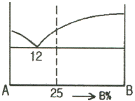
- 14.8%
- 25.0%
- 75.0%
- 85.2%
(정답률: 45%)
24. 재결정온도가 가장 낮은 금속은?
- Al
- Zn
- Mg
- Cu
(정답률: 62%)
25. 고용체 조직에 해당하는 것은?
- 펄라이트
- 오스테나이트
- 베이나이트
- 레데뷰라이트
(정답률: 54%)
26. 냉간가공 한 금속을 고온에서 풀림처리하면 회복, 재결정이 일어나는데 이들의 구동력(driving force)이 되는 것은?
- 운동에너지(kinetic energy)
- 축적에너지(stored energy)
- 표면에너지(surface energy)
- 용적에너지(volume energy)
(정답률: 75%)
27. 다음 중 황동에서 발생하는 자연균열의 가장 큰 원인은?
- 고온
- 수소
- 잔류응력
- 적층결함
(정답률: 71%)
28. 다음 상태도에서는 어떤 불변반응이 나타나는가? (단, α, β, γ = 고상이다.)
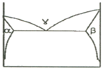
- 포정반응
- 공석반응
- 포석반응
- 편정반응
(정답률: 59%)
29. 다음 3원계 상태도에서 0 합금 중 P 합금의 양은?
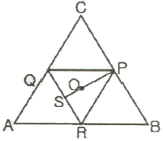
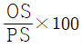
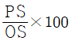
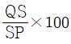
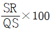
(정답률: 79%)
30. 금속에서 전기 및 열이 잘 전달되는 주된 이유는?
- 반데르발스인력에 의해
- 이온결합에 의해
- 공유결합에 의해
- 자유전자에 의해
(정답률: 84%)
31. 금속이 응고할 때 자유에너지의 변화를 설명한 것으로 틀린 것은?
- 표면에너지는 증가한다.
- 체적에너지는 감소한다.
- 응고 금속의 자유에너지는 표면에너지 및 체적에너지와 관계있다.
- 엠브리오의 임계 크기에서 응고 금속의 자유에너지는 최소가 된다.
(정답률: 69%)
32. 다결정재료의 결정입계에 의한 강화방법에 대한 설명으로 틀린 것은?
- 결정입계가 많을수록 재료의 강도는 증가한다.
- 결정의 입도가 작아질수록 재료의 강도는 증가한다.
- 결정입계에 의한 강화는 결정립 내의 슬립이 상호 간섭함으로써 발생된다.
- Hall-Petch식에 의하면 결정질 재료의 결정립의 크기가 작아질수록 재료의 강도는 감소한다.
(정답률: 80%)
33. 상온에서 순철에 관한 설명으로 틀린 것은?
- 체심입방격자이다.
- 담금질해도 경화되지 않는다.
- 귀속원자 수는 2개이다.
- A1 변태를 하기 때문에 담금질하면 경화된다.
(정답률: 56%)
34. 체심입방격자의 단위격자 원자수와 원자 충전율은 얼마인가?
- 단위격자 원자수 2개, 원자 충전율 68%
- 단위격자 원자수 4개, 원자 충전율 68%
- 단위격자 원자수 2개, 원자 충전율 74%
- 단위격자 원자수 4개, 원자 충전율 74%
(정답률: 77%)
35. 다음 중 고용체 강화합금에서 용매 원자와 용질 원자사이의 원자 크기 차가 가장 크고, 항복강도가 제일 높은 합금은?
- Cu-Ni
- Cu-Sn
- Cu-Be
- Cu-Zn
(정답률: 70%)
36. Fick의 확산 제2법칙에 대한 설명으로 틀린 것은? (단, D는 확산계수이며, 정수이다.)
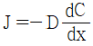
으로 표현된다.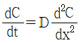
으로 표현된다.- 용질원자의 농도가 시간에 따라 변화하는 관계를 나타낸다.
- 확산에서의 물질의 흐름이 시간에 따라 변화하지 않는 상태를 정상상태라 하며
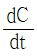
는 0이다.
(정답률: 67%)
37. 칼날전위(Edge dislocation)에 대한 설명 중 옳은 것은?
- 부피 결함의 일종이다.
- 잉여반면을 가지지 않는다.
- 전위선과 버거스 벡터(Burgers vector)가 서로 수직이다.
- 전위선이 움직이는 방향은 버거스 벡터에 수직으로 움직인다.
(정답률: 82%)
38. 일정한 온도와 압력에서 일어나는 상변태에 있어 깁스의 자유에너지(G) 식으로 옳은 것은? (단, H는 엔탈피, T는 절대온도, S는 엔트로피이다.)
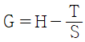
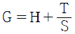
- G = H - TS
- G = H + TS
(정답률: 66%)
39. 탄소강에서 탄소의 증가에 따른 물리적 성질의 변화로 틀린 것은?
- 비열이 증가한다.
- 비중이 증가한다.
- 자기변태
- 규칙-불규칙 변태
(정답률: 51%)
40. 규칙화한 합금을 재가열하면 가역적으로 규칙도가 감소하고 불규칙한 상태로 되는 현상은?
- 고용체
- 동소변태
- 자기변태
- 규칙-불규칙 변태
(정답률: 82%)
3과목: 금속열처리
41. 과공석강(1.2%C)을 열처리한 결과 각 단계가 끝난 후에 현미경 조직으로 잘못 연결된 것은?
- 물속에 담금질 : 펄라이트
- 650℃에 담금질하여 5초간 유지 : 펄라이트
- 950℃로 가열하여 1시간 유지 : 오스테나이트
- 260℃에 담금질하여 300초 유지 : 미세한 펄라이트 + 침상 베이나이트
(정답률: 62%)
42. 탄소강을 고온에서 열처리 할 때 표면 산화나 탈탄이 발생한다. 이를 방지하기 위하여 조성하는 로내의 분위기로 틀린 것은?
- 환원성 분위기
- 진공 분위기
- 산화성 분위기
- 불활성 가스 분위기
(정답률: 78%)
43. 합금강에 첨가되었을 때 경화능 향상 효과가 가장 큰 원소는?
- Si
- B
- Cu
- Ni
(정답률: 78%)
44. 다음 중 담금질 균열과 변형의 가장 주된 원인은?
- 응력 감소
- 경도 증가
- 균일한 체적변화
- 온도 차이로 인한 열응력
(정답률: 76%)
45. 강을 냉각할 때 서브제로(심냉)처리를 하면 얻을 수 있는 효과가 아닌 것은?
- 조직이 미세화된다.
- 강재의 내마모성을 증가시킨다.
- 잔류오스테나이트를 마텐자이트로 변태시킨다.
- 마텐자이트를 잔류오스테나이트로 분해시킨다.
(정답률: 77%)
46. 다음 중 수용액에서 퀜칭시 냉각속도가 가장 빠른 단계는?
- 복사단계
- 비등단계
- 대류단계
- 증기막 형성단계
(정답률: 80%)
47. 공석강을 오스테나이트화 한 후 로냉하였을 때의 조직은?
- 소르바이트
- 펄라이트
- 마텐자이트
- 트루스타이트
(정답률: 47%)
48. 비례제어식 온도 제어장치에 대한 설명 중 옳은 것은?
- 전기로의 전기회로를 2회로 분할하여 그 한쪽을 단속시켜서 전력을 제어하는 방법이다.
- 전기로의 공급 전력은 조절기의 신호가 온(ON)일 때 100%로 공급하고, 오프(OFF)일 때 60~80%로 낮추는 방법이다.
- 단일제어계(ON-OFF제어계)로 전자접촉기, 전자 수은 릴레이 등을 결합시켜서 전기로에 공급되고 있는 전력의 전부를 단속시키는 방법이다.
- 열처리 작업에 의한 온도-시간 곡선에 상당하는 캠(CAM)을 만들고 캠축에 고정한 캠의 주위를 따라서 프로그램용 지시를 작동시키는 방법이다.
(정답률: 67%)
49. 가스침탄에서 Harris의 방정식에 의한 침탄시간을 바르게 표현한 것은? (단, Tc=침탄 소요시간, Tt=침탄시간+확산, C=목표 표면 탄소농도(%), Co=침탄시 탄소농도(%), Ci=소재 자체의 탄소농도(%)이다.)
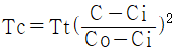
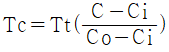
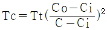
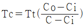
(정답률: 61%)
50. 기계 구조용 부품에 사용되는 청동의 열처리 방법은?
- 연화 어닐링
- 항온 어닐링
- 침탄 어닐링
- 재결정 어닐링
(정답률: 54%)
51. 다음 그림은 가스침탄 공정도이다. 확산이 이루어지는 시간대는 어느 곳인가?
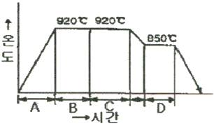
- A
- B
- C
- D
(정답률: 65%)
52. 고탄소강, 특수강, 침탄강, 베어링강 등에 적용하는 것으로 오스테나이트 구역에서 Ms점 직상의 염욕에 담금질한 후 공냉하여 Ar"변태를 전행시키는 특수열처리 방법으로 적당한 것은?
- 마퀜칭
- 마템퍼링
- 오스템퍼링
- 인상담금질
(정답률: 53%)
53. 강의 일반적인 냉각방법과 관련이 가장 적은 것은?
- 연속 냉각
- 2단 냉각
- 가열판 냉각
- 항온 냉각
(정답률: 80%)
54. 다음 열처리법에서 화학적 표면 경화법은?
- 질화(nitriding)
- 쇼트피닝(shot peening)
- 화염경화법(flame hardening)
- 고주파경화법(induction hardening)
(정답률: 75%)
55. 탄소강에서 탄소량의 증가에 따라 Ms점과 Mf은 어떻게 되는가?
- Ms점 상승, Mf점 저하
- Ms점 상승, Mf점 상승
- Ms점 저하, Mf점 상승
- Ms점 저하, Mf점 저하
(정답률: 56%)
56. 펄라이트 가단주철의 제조방법이 아닌 것은?
- 합금원소 첨가에 의한 방법
- 열처리곡선 변화에 의한 방법
- 백주철의 탈탄에 의한 방법
- 흑심가단주철의 재가열 처리에 의한 방법
(정답률: 61%)
57. 진공열처리에 사용되는 냉각용 가스가 아닌 것은?
- 헬륨(He)
- 질소(N2)
- 아르곤(Ar)
- 산소(O2)
(정답률: 63%)
58. 고속도강, 스테인리스강을 염욕처리할 때 사용되는 염욕은?
- 저온용 염욕
- 중온용 염욕
- 고욘용 염욕
- 심랭용 염욕
(정답률: 69%)
59. 강을 열처리할 때 결함이 일어나는 원인이 아닌 것은? (문제 오류로 실제 시험에서는 1, 2, 3번이 정답처리 되었습니다. 여기서는 1번을 누르면 정답 처리 됩니다.)
- 염욕 및 금속용에서 가열한다.
- 중성 분말제 속에서 가열한다.
- 표면에 금속 도금, 피복을 한다.
- 고온에서 되도록 장시간 가열한다.
(정답률: 82%)
60. A1 변태점 이하에서 가열하는 열처리는?
- 템퍼링
- 담금질
- 어닐링
- 노멀라이징
(정답률: 63%)
4과목: 재료시험
61. 판재의 소성가공성을 평가하는데 가장 적합한 시험은?
- 불꽃시험
- 굽힘시험
- 커핑시험
- 조미니시험
(정답률: 60%)
62. 피로시험에서 S-N 곡선의 S와 N은 무엇을 나타내는가?
- 응력과 변형
- 응력과 반복횟수
- 반복횟수와 변형
- 반복횟수와 시험시간
(정답률: 89%)
63. 방사선 투과시험은 내부결함을 2차원의 투영상으로 검출하는 방법이며, 객관성이 우수하여 널리 이용되고 있는데 그 적용대상으로 가장 적합한 것은?
- 용접부 내부 검사
- 부식 균열 검사
- 압연품 표면 검사
- 단조품 표면 결함 검사
(정답률: 85%)
64. 안전에 대한 관심과 이해가 인식되고 유지됨으로써 얻어지는 장점이 아닌 것은?
- 직장의 신뢰도를 높여 준다.
- 생산효율을 원활하게 해 준다.
- 고유 기술의 축적으로 인하여 품질이 향상된다.
- 상하 동료 간에 인간관계가 개선되나 이직률이 증가한다.
(정답률: 89%)
65. 주사전자현미경의 관찰용도로 적합하지 않은 것은?
- 금속의 피로파단면
- 금속의 표면마모상태
- 금속재료의 패턴(pattern) 분석
- 금속기지 중의 석출물
(정답률: 74%)
66. 재료가 변형시에 외부 응력이나 내부의 변형 과정에서 방출되는 낮은 응력파(stress wave)를 감지하여 공학적으로 응력을 측정하는 법은?
- 음향 방출법
- 열탄성 응력 해석법
- 무아레 응력 측정법
- X-ray에 의한 응력 측정법
(정답률: 71%)
67. 다음 중 크리프시험에 대한 설명으로 옳은 것은?
- 제1단계를 정상 크리프라 하며, 일정하게 진행하는 단계이다.
- 제2단계를 가속 크리프라 하며, 점차 증가하여 파단에 이르는 단계이다.
- 제3단계를 감속 크리프라 하며, 변형률이 감소되는 단계이다.
- 재료에 어떤 일정한 하중을 가하고 어떤 온도에서 긴 시간 동안 유지하며 스트레인의 증가를 측정하는 시험이다.
(정답률: 81%)
68. 설퍼프린트법에 의한 황 편석 분류에서 역편석의 기호는?
- Sc
- SI
- SN
- SD
(정답률: 77%)
69. 비커스 경도시험에 관한 설명 중 틀린 것은?
- 기준편은 자기를 띠지 않아야 한다.
- 인증용 금속 기준편의 두께는 4mm 이상이어야 한다.
- 다이아몬드 피라미드의 중심축과 누르개 부착축 사이의 각도는 0.3°보다 작아야 한다.
- 대면각이 136° 인 피라미드 형상의 다이아몬드 추를 압입자로 사용한다.
(정답률: 54%)
70. 상대적으로 경한 입자나 미세돌기와의 접촉에 의해 표면으로부터 마모입자가 이탈되는 현상으로서 긁힘자국이나 끝이 파인 홈들이 나타나는 마모기구는?
- 피로마모
- 응착마모
- 산화마모
- 연삭마모
(정답률: 84%)
71. 알루미늄과 그 합금의 현미경 조직검사에 사용하는 부식제로 가장 적합한 것은?
- 질산 용액
- 염화제2철 용액
- 수산화나트륨 용액
- 피크린산 알콜 용액
(정답률: 71%)
72. 연강, 동합금, 알루미늄합금 및 가단주철 등을 측정할 수 있으며, 1/16인치 강구를 사용하는 로크웰 경도 스케일(scale)은?
- B, F, G
- A, C, D
- A, 30-N, C
- 15-N, R, 15-T
(정답률: 73%)
73. 연신율 산출 공식으로 옳은 것은?
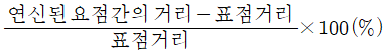
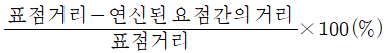
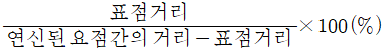
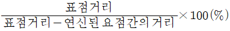
(정답률: 73%)
74. 전도체 내에 유도되는 원형전류(circulating electrical currents)를 와전류라고 일컫는다. 이러한 와전류는 무엇에 의하여 유도되는가?
- 감마선
- 압전력
- 전자유도
- 감광속도
(정답률: 75%)
75. 금속재료의 파괴원인 중 화학적인 현상에 해당되는 것은?
- 충격에 의한 파괴
- 마모에 의한 파괴
- 피로에 의한 파괴
- 부식에 의한 파괴
(정답률: 88%)
76. 초음파 탐상시 사용되는 접촉매질로 사용할 수 없는 것은?
- 물
- 염산
- 기계유
- 글리세린
(정답률: 81%)
77. 재료의 강성계수를 측정하는 시험법은?
- 경도시험
- 전단시험
- 마모시험
- 비틀림시험
(정답률: 71%)
78. 압축시험에서 단면치수에 대한 길이의 비에 따라 파괴현상에 차이가 있다. 가능고 긴 직주(slender column)를 압축하였을 때 굽히면서 파괴되는 현상은?
- 좌굴(Buckling)
- 연성파괴(Ductile Fracture)
- 전단파괴(Shear Fracture)
- 취성파괴(Brittle Fracture)
(정답률: 72%)
79. 충격시험편에서 노치(Notch) 반지름의 영향을 설명한 것 중 옳은 것은?
- 노치 반지름이 클수록 응력집중이 크다.
- 노치 반지름이 클수록 충격값은 낮다.
- 노치 반지름이 클수록 흡수에너지가 크다.
- 노치 반지름이 클수록 파괴가 잘 일어난다.
(정답률: 59%)
80. 결정립의 지름이 0.12mm 이상인 결정조직 상태나, 가공방향 등을 검사하려면 어떤 시험법이 적합한가?
- X선 회절법
- 매크로 검사법
- 초음파 검사법
- 조직량 측정법
(정답률: 62%)